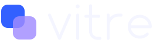

Design system Demain · exploration, rien n'est adopté
Cinq directions sombres, côte à côte
Chaque page montre exactement le même contenu fictif : solde et carte, graphique avec tableau de données, opérations, formulaire avec ses états, boutons, badges et écran d'accueil mobile. La première respecte la marque actuelle ; les quatre autres sont de nouvelles marques. Les mesures citées viennent des tokens et du navigateur.
-
Proposition 1, marque existante

Dawn : la marque actuelle, avec un glow dérivé de Dawn
- Teinte
- Dawn #DB6430 sur Night profond, aucune nouvelle teinte d'accent
- Polices
- Pile système de la marque, 400 et 600, 0 Ko téléchargé
- Glow
- Dawn, 32 px, opacité 50 %
- Texte le plus faible mesuré
- 4,75:1 (texte discret au coin cuivré de la carte héros)
À retenir si la marque doit rester intacte : rien à télécharger, aucune teinte nouvelle, et la règle « Dawn veut dire prévu » est conservée telle quelle.
Ouvrir Dawn -
Proposition 2, nouvelle marque

Kerf : lime sur graphite, dense et compté au centime
- Teinte
- Lime #D4FF3A sur graphite #101110, d'après l'inspiration 01
- Polices
- Schibsted Grotesk et Martian Mono pour les chiffres, 60 Ko
- Glow
- Lime, 28 px, opacité 38 %, le plus serré
- Texte le plus faible mesuré
- 4,60:1 (texte discret au coin lime de la carte héros)
Pour un outil consulté chaque jour : la police dédiée la plus légère, des chiffres monospace qui s'alignent sans effort, et l'accent le plus contrasté (16,4:1 sur le fond).
Ouvrir Kerf -
Proposition 3, nouvelle marque

Vitre : cobalt et violet en verre dépoli sur encre
- Teinte
- Cobalt #3360FF et violet #A08CFF sur encre #05061A, d'après l'inspiration 02
- Polices
- Mona Sans variable, titres élargis à 112 %, 98 Ko
- Glow
- Cobalt, 44 px, opacité 60 %, le plus intense ; la ligne du graphique brille
- Texte le plus faible mesuré
- 4,85:1 (texte discret au coin bleu de la carte héros, après correction)
Pour l'effet le plus spectaculaire : le verre et le glow les plus forts des cinq, au prix de surfaces translucides à surveiller sur chaque nouvel écran.
Ouvrir Vitre -
Proposition 4, nouvelle marque
Ardent : magenta vers ambre sur aubergine presque noire
- Teinte
- Magenta #E0359A vers ambre #F6A430 sur aubergine #0E080F, d'après l'inspiration 03
- Polices
- Archivo variable, titres 800 étendus à 125 %, 90 Ko
- Glow
- Magenta, 36 px, opacité 55 %
- Texte le plus faible mesuré
- 4,55:1 (texte discret au coin magenta de la carte héros)
Pour la personnalité la plus chaude : titres massifs et ressort visible (9,5 % de dépassement) ; le bouton doit rester sur un magenta sombre pour garder le texte blanc à 5,55:1.
Ouvrir Ardent -
Proposition 5, nouvelle marque
Serac : menthe glacée et cyan sur noir froid, chiffres en serif
- Teinte
- Menthe #78F0C8 et cyan #3FC6EE sur noir froid #06090B
- Polices
- Newsreader pour titres et chiffres, Atkinson Hyperlegible Next pour le texte, 157 Ko
- Glow
- Menthe, 40 px, opacité 35 %, le plus discret
- Texte le plus faible mesuré
- 4,94:1, la meilleure marge des cinq
Pour une lecture posée sur la durée : la plus aérée et la meilleure marge de contraste, avec le mouvement le plus lent (860 ms) et les polices les plus lourdes.
Ouvrir Serac